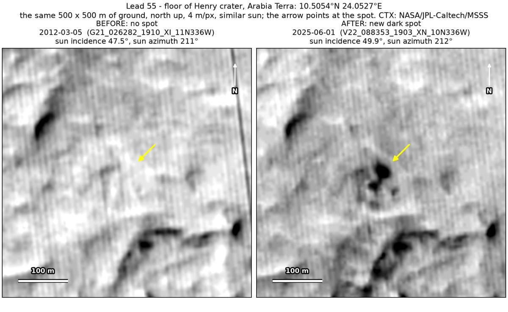
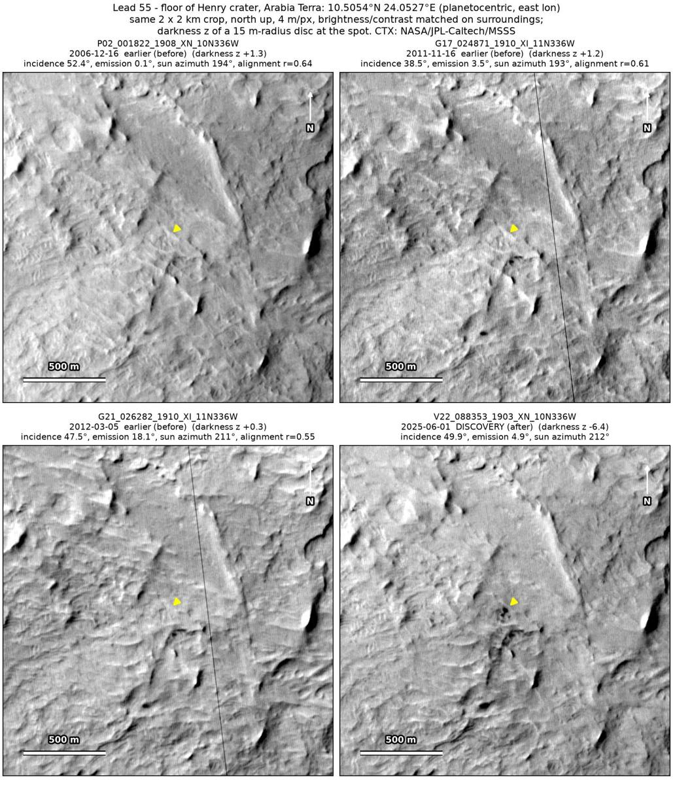
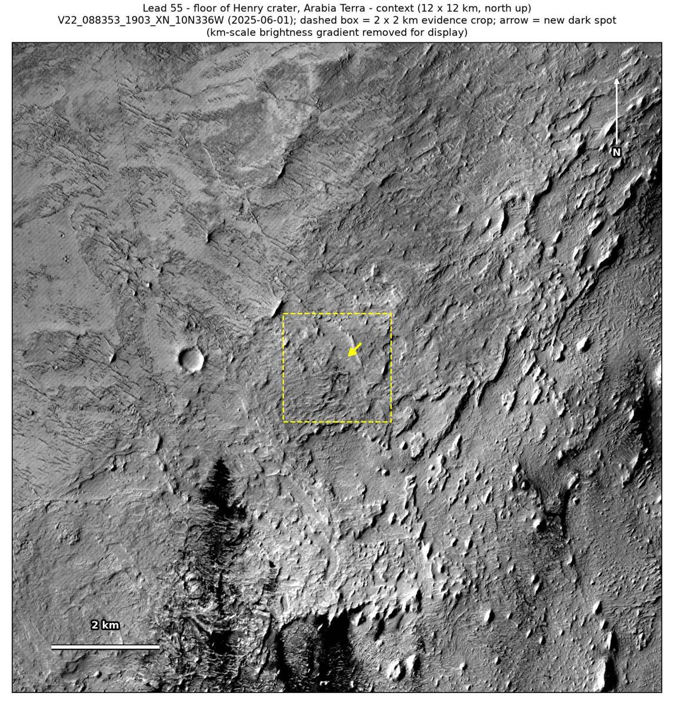

Professor of Mathematics
Paata Ivanisvili
Department of Mathematics, University of California, Irvine

← Possible new impact sites on Mars
Candidate 55: Floor of Henry crater, Arabia Terra
Promising · roughly 55%

What changed. A compact cluster of dark blobs about 80 m across, the largest about 30 m, appeared on the floor of Henry crater in Arabia Terra, between March 2012 and June 2025, in one CTX image so far.
Why it may be a new impact. Three earlier images, from 2006, 2011 and 2012, show nothing there, while a dark feature 250 m to the east-south-east shows clearly in all three; the March 2012 one was taken under the same sun as the June 2025 image. Several dark blobs appearing together are most naturally read as a cluster impact, a group of small impacts made at the same time.
- Location
- 10.505° N, 24.053° E
- Absent
- 16 December 2006, 16 November 2011 and 5 March 2012
- Present
- 1 June 2025
- Size
- Compact cluster of dark blobs about 80 m across, the largest about 30 m
- Confidence
- Promising candidate; roughly 55% that it is a new impact.
- Caveat
- Only one image shows it, and in the 13 years since the March 2012 image dark sand or darker ground could have been exposed on the ridge where it lies. It lies outside every footprint of the high-resolution HiRISE camera; the nearest ends 6.6 km away. Like every candidate here, it is unconfirmed: see the caveat.

